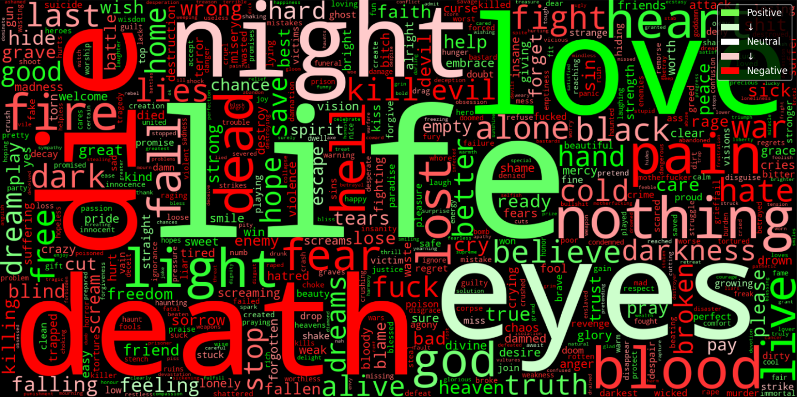

The Metal Corpus

"life"
The most common meaningful word across heavy metal lyrics, not "death." Ten of thirteen subgenres agree. Only black metal actually leads with "death."
The Metal Corpus is a data pipeline that collects, cleans, and analyzes lyrics from over 1,100 heavy metal bands across 13 subgenres, built to answer a question I've had for years: what does the genre actually talk about?
1,113
Bands
63,647
Songs
44
Countries
16.6M
Words

The Full Analysis
Three metrics, three different answers: the most used word, the most disproportionately "metal" word, and the most universally "metal" word across every subgenre. The full breakdown with tables, word clouds, my methodology, and more lives in the notebook.
View the Notebook GitHub Repo